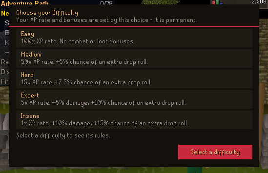
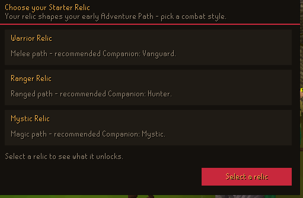
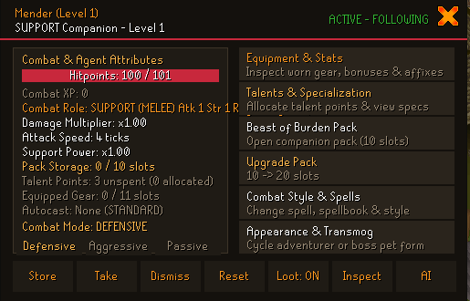
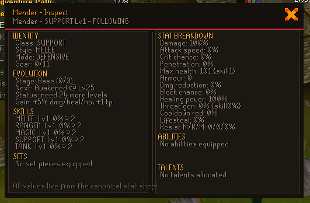
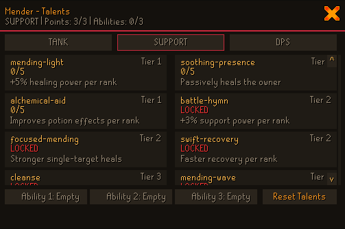

Five combat identities
MELEE, RANGED, MAGIC, SUPPORT, and TANK tracks turn a companion into a role you can actually build around.
MMO RPG systems / revision 239
Build a legend with a companion that learns, and carry gear that remembers every battle.





01 / CORE IDENTITY
Unforge is built around progression that stays meaningful after the fight ends. Your ally grows. Your equipment carries history. Your choices become part of the account.
COMPANION SYSTEM / LIVE
It is a persistent combat partner with its own stats, spellbook, behaviour, abilities, progression, equipment, and memory.
MELEE, RANGED, MAGIC, SUPPORT, and TANK tracks turn a companion into a role you can actually build around.
Touch-range melee, weapon-range attacks, spell range, a follow leash, and server-side validation keep movement honest.
Each companion owns a persisted STANDARD or ANCIENTS spellbook with validated autocast selection and combat style gates.
Target priority, follow distance, auto-taunt, defensive wards, healing, buffs, and catch-up movement are part of the companion record.
A template tells you what an item is. An Item Instance tells you what happened to this exact one.
ITEM INSTANCE EVOLUTION 2.0 / LIVE CORE
Unique identity, ownership, rarity, affixes, sockets, XP, mastery, evolution branches, atomic mutations, and a tamper-evident history — all kept on the server.
Open the instance brief →THE ITEM INSTANCE BRIEF
A readable state.
A verifiable history.
Every instance carries a globally unique UUID, binding state, owners, lifecycle state, revision, and a canonical fingerprint.
Item XP, item level, mastery, evolution stages, branches, gates, sockets, gems, rarity, quality, and affixes form one explainable progression model.
Mutations go through one gateway, bump revisions, stay atomic, and append a hash-chained event. Restore and validation paths are built in.
04 / THE SYSTEMS STACK
Built to be played.
Built to be extended.
A server-authoritative journal for skill, perk, PvM, slayer, wilderness slayer, companion talent, quest, and donator balances — with inactive systems clearly separated.
Wilderness boss registrations, solo boss arenas, custom Unforge encounters, Theatre and Chambers frameworks, drops, kill counts, and respawn lifecycle.
Mining feeds persistent skill points, the skill shop turns them into rewards, and Smithwright perks feed back into PvM mitigation without changing PvP.
Coins, PvM points, slayer economies, skill points, perk points, companion talent points, and Unforge shop bindings are audited as separate sources.
Regular, Ironman, Hardcore Ironman, Ultimate Ironman, Hardcore Ultimate, and Group Ironman rules shape trading, banks, drops, group storage, and hardcore demotion.
Slayer dungeon catalogues, direct teleport destinations, wilderness hotspots, NPC drops, teleporter groups, world navigation, and exact spawn tooling connect the world together.
Bank, combat, equipment, item inspect, journal, skill shop, talent tree, world map, settings, and gameframe work are wired for the actual server state.
Developer Hub lists, the Unforge teleporter, NPC Area Builder, admin commands, content studio, audits, and a local Codex bridge keep iteration visible.
05 / THE FORGE LOG
Unforge is not a static feature list. The architecture is designed to make the next system feel native: authoritative state, readable UI, tests, and an audit trail before the next layer goes live.
Keep watch ↗Combat roles, spellbooks, behaviours, evolution, inspect, affixes, lineage, and mutation history form the new core.
Boss-specific mechanics, wider raids, custom world encounters, and deeper reward paths continue to land on the existing framework.
Every new system should be explainable in-game, testable on the server, and visible in the player’s progression.
06 / YOUR TURN
Unforge is being shaped for players who want their build, their companion, and their gear to matter.